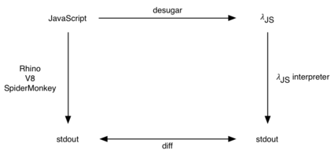

λJS: A Tested Semantics for JavaScript
λJS is a small, tested semantics for JavaScript.
ΛJS is a Felleisen-Hieb style semantics for JavaScript.
Based on the JavaScript Specification
λJS unambiguously encodes the prose in the official
JavaScript specification (ECMA-262).
| Input Type |
Result |
| Undefined |
Throw a TypeError exception |
| Null |
Throw a TypeError exception |
| Boolean |
Create a new Boolean object whose [[value]] property is set tot he value of the boolean. See 15.6 for a description of Boolean objects. |
| etc. |
|
let toObject = fun(x) .
if typeof x === "undefined" then
throw makeException("TypeError")
else if x === null then
throw makeException("TypError")
else if typeof x === "boolean" then
ref {
"$proto": "$Boolean.prototype",
"$class": "Boolean",
"$value": x
}
else
...
|
| Algorithm 9.9 from the ECMA-262, 3rd. ed |
The same algorithm from the λJS source |
Tractable Reduction Semantics
We designed λJS to be amenable to proofs and an easy target
for tools. We factor λJS into two components: a reduction
semantics and a desugaring function.
Tested Against Real Web Browsers
We
Tested to conform with actual Web browsers (December 2009)

Foundation for Several Tools
Others have built on λJS too:
David van Horn and Matt Might use λJS to build an analytic framework for JavaScript,
Rodolfo Toledo and Éric Tanter use λJS to specify aspects for JavaScript,
IBEX, from Microsoft Research, uses λJS for its JavaScript backend to produce verified Web browser extensions, and
Others have a secret reimplementation of λJS in Java. We are now enterprise-ready.
How to Use λJS
has two components: a reduction semantics
- Core caculus
- fits on three pages (unlike ECMAScript 3rd ed)
* Fragment of AST from ECOOP paper
- Mechanized in Coq
* Same fragment in Coq
- Mechanized in PLT Redex
* Same fragment in Redex
- Desugaring
- 1,000 LOC of Haskell (excluding auxiliary functions, such as the parser)
- (Mostly) compositional desugaring. (With is definitely not compositional;
lifting of variable declarations is unusual)